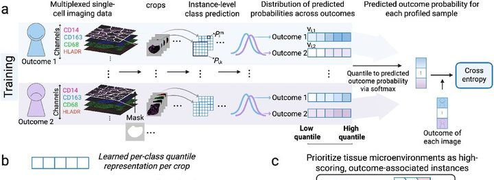
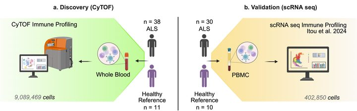
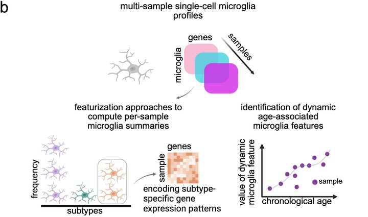
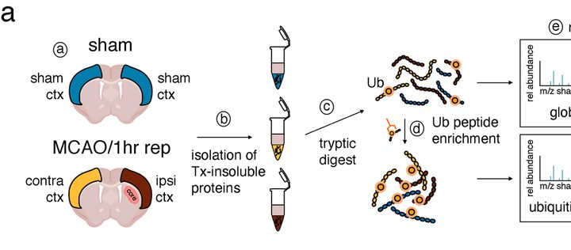
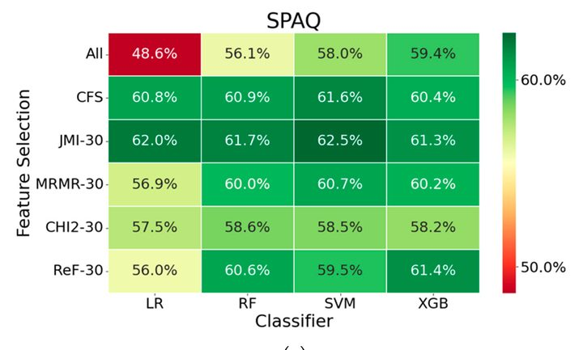
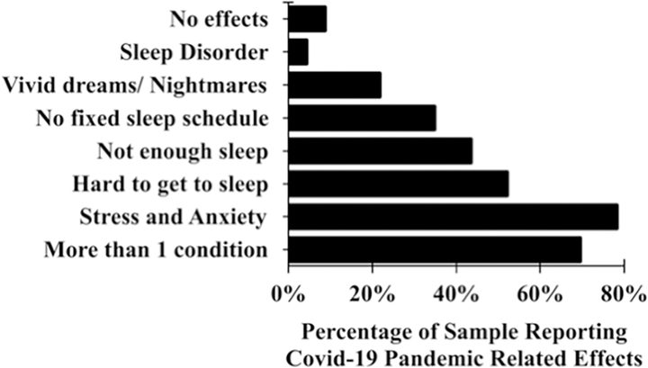
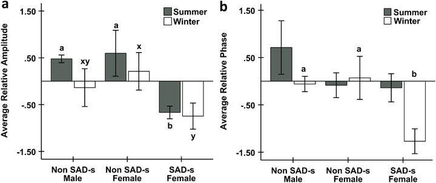

Hi, I'm Luvna.
I study how the immune system talks to the brain.
PhD candidate, Bioinformatics & Computational Biology, UNC Chapel Hill
Science
I'm a PhD candidate in Bioinformatics & Computational Biology at UNC Chapel Hill, in Natalie Stanley's lab. I work on computational methods for immune data (single-cell, spatial, and mass cytometry), mostly in ALS, and some in stroke, Alzheimer's, and aging.
Highlights
- 2026 Computational biology intern in neurodegeneration, Bristol Myers Squibb
- 2026 Kalman/AFAR Graduate Student Award in Geroscience, American Federation for Aging Research
- 2026 Released the Microglia Subtype Marker Atlas
- 2025 Best Talk Award, Genetics/GMB/BCB Departmental Retreat, UNC Chapel Hill
Publications
* denotes co-first authorship. Full list on Google Scholar and ORCID. Figures are reproduced from the papers under their CC BY 4.0 licences (J Affect Disord Rep: CC BY-NC-ND 4.0, shown uncropped).
-

MICRON learns outcome-associated representations of spatial immune microenvironments
In revision. Preprint: bioRxiv (2026)
-

-

Microglia single-cell RNA-seq enables robust and applicable markers of biological aging
Aging Cell, 24(8), e70095 (2025)
-

Post-ischemic ubiquitination at the postsynaptic density reversibly influences the activity of ischemia-relevant kinases
Communications Biology, 7(1), 321 (2024)
-

Risk for seasonal affective disorder (SAD) linked to circadian clock gene variants
Biology, 12(12) (2023)
-

Intra-individual impact of the COVID-19 pandemic on mental health and sleep in young adults
PLOS ONE, 17(10), e0276165 (2022)
-

Low circadian amplitude and delayed phase are linked to seasonal affective disorder (SAD)
Journal of Affective Disorders Reports, 10, 100395 (2022)
Beyond the lab
Science writing & community
I write, edit and illustrate for The Pipette Pen, UNC's science communication club (articles), and co-direct HFROG, a trainee-run discussion group on human functional and regulatory genomics. Before that I tutored calculus and differential equations for four years.
Outside work
Watercolour and origami, running and lifting. I'm from Mauritius, so Creole was my first language; Mandarin is the one I'm currently failing to learn.
Contact
I'm always glad to hear from people working on neuroimmunology, cell–cell communication, or anything that makes messy biological data more interpretable.